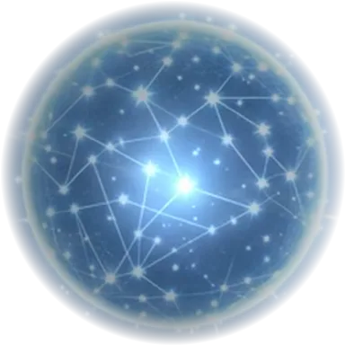
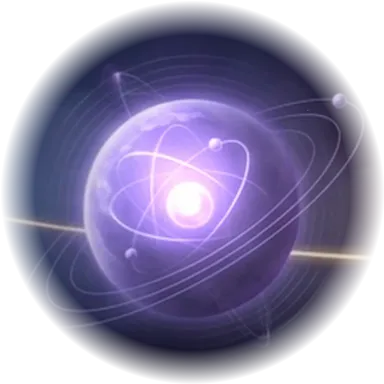
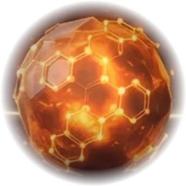
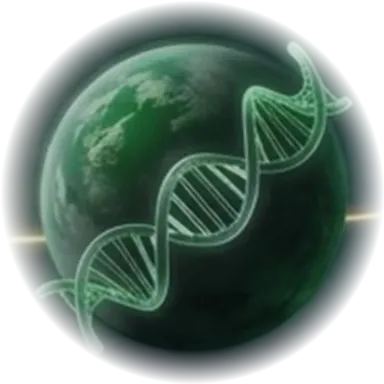
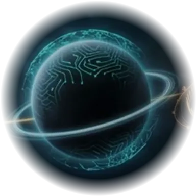
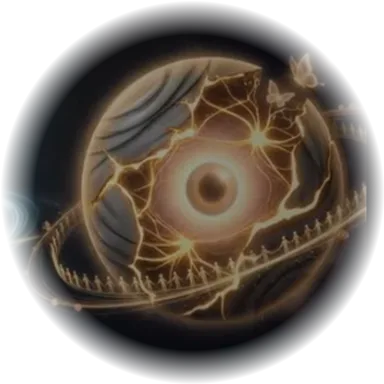
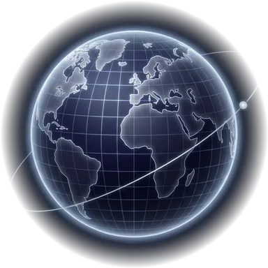
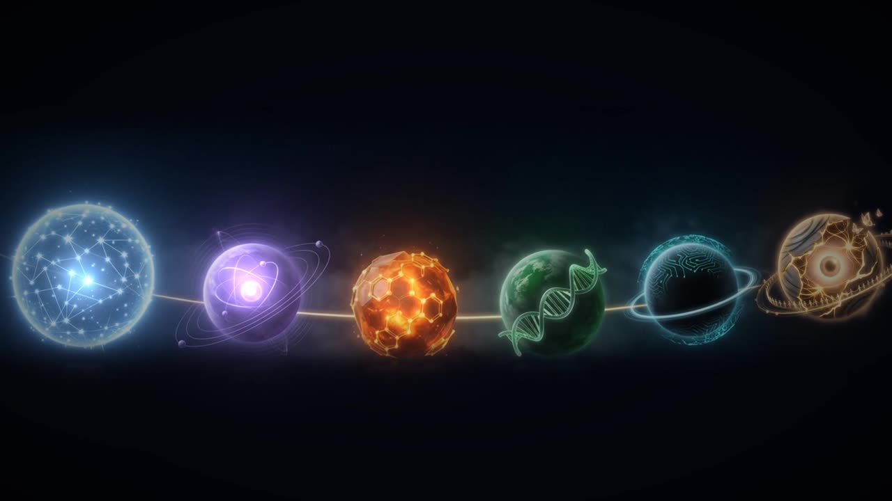

联系开发者
DEVELOPER · 领航员创世计划开发者
想聊学习世界的点子、合作，或反馈问题，欢迎加我微信。
微信
添加时请注明来意，例如「创世计划 · 合作」或「创世计划 · 反馈」。📖 我的开发心得 · 开发攻略书 第一卷 →kevinwong8634






七个互相连通的学习世界 · 把世界当成一款游戏来拆解
七个世界，一张星图。让一个普通人，用玩游戏的热情，在一生中走过人类知识的全图。
北斗七星并不在同一平面：天枢距我们约 123 光年，天璇约 80 光年。拖动看看它们在太空中的真实位置。
点击或按任意键跳过

七个世界 · 76 秒想聊学习世界的点子、合作，或反馈问题，欢迎加我微信。
kevinwong8634星桥：在一个问题里，自然地走进另一个世界
由新到旧 · 日期为北京时间 · 按 N 打开
开发看板 · 七个世界的下一步 →拖动星盘旋转 · 点卡片翻面 · 卡顶金线是北斗连线，已上线的世界会点亮
说说你多大、对什么好奇，我从七个世界里挑 1–3 个给你。都可以不选。
年龄只是建议，每个世界都对所有人开放。选择只保存在这台设备上。
GENESIS · 01
创世计划是七个互相连通的学习世界。每个世界都从一个让人忍不住想知道答案的真实问题出发，让你亲手把规则拆开、改动、再装回去。
GENESIS · 02
北斗七星自古为人指路。七颗星对应七个世界，也对应每个世界都遵守的「创世七律」：
天枢是北斗第一星，也是第一个看向真实天空的世界。
GENESIS · 03
想聊学习世界的点子、合作，或反馈问题，欢迎加我微信。
kevinwong8634